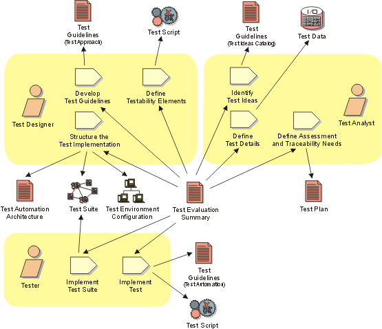

Disciplines >
Disciplines >
 Test >
Test >
 Workflow >
Improve Test Assets
Workflow >
Improve Test Assets
Disciplines >
Test >
Workflow >
Improve Test Assets
Workflow Detail:
|
Topics |
 |
The purpose of this workflow detail is to maintain and improve the test assets.
This is important especially if the intention is to reuse the assets developed
in the current test cycle in subsequent test cycles.
For each test cycle, this work is focused mainly on:
Although most of the roles in the Test discipline play a part in performing this work, the effort is primarily centered around the Test Designer and Tester roles. The most important skills required for this work include focus on test asset coverage, an eye for potential reuse, consistency of test assets and an appreciation of architectural issues.
As a heuristic for relative resource allocation by phase, typical percentages of test resource use for this workflow detail are: Inception — 05%, Elaboration — 20%, Construction — 10% and Transition — 10%.
Where the requirement for test automation is particularly important, this work may take more effort and, therefore, more time or more resource. In some cases it may be useful to assign the creation and maintainance of automation assets to a separate sub-team, allowing them to specialize on automation concerns. This allows the other team members to focus on the improvement of non-automation test assets.
This work typically occurs at the end of each test cycle, however some teams perform aspects of this work only once per Iteration. A common practice is to focus the work in each test cycle on adding and maintaining only those tests necessary to address the Workflow Detail: Validate Build Stability for the next test cycle. After the final Build for the Iteration has been tested, other aspects of test asset improvement may also be explored.
The following references provide more detail to help guide you in performing this work:
For information about the underlying concepts behind this work:
|
Rational Unified
Process
|